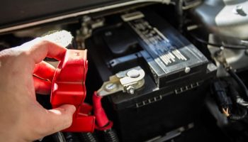
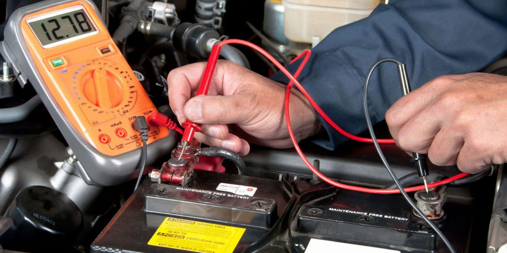
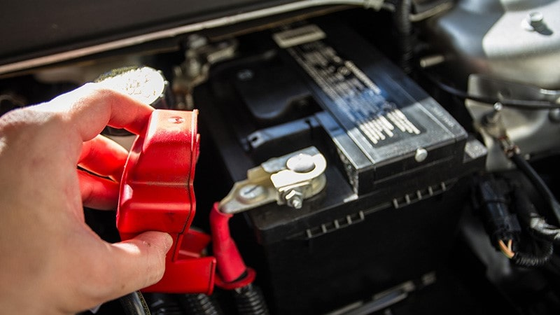

نکات مهمی که در خرید باتری خودرو باید به آنها توجه شود
راهنمای خرید باتری خودرو
باتری خودرو که در زیر کاپوت ماشین شما قرار گرفته است وظایف زیادی را بر عهده دارد. باتری خودرو برق مورد نیاز شیشه های کشویی ، قفل درب ، چراغ و دیگر لوازم جانبی خودرو شما را تامین می کند. مهم ترین کار باتری خودرو همانطور که می دانید راه اندازی خودرو شما است. وقتی که باطری خودرو شما از کار می افتد دیگر ماشین شما هیچ کارایی نخواهد داشت. فرسوده شدن باتری مانند فرسوده شدن سایر اجزا و لوازم خودرو امری طبیعی است. مهم ترین کار این است که بعد از فرسوده شدن آن را تعویض کنیم. برای تعویض کردن باطری ماشین توجه به یک سری نکات مهم و کلیدی بسیار مهم است. نکاتی که در این مطلب قصد داریم به بیان آن ها بپردازیم.
وجود انواع مختلف باطری ماشین در بازار باعث می شود که انتخاب باتری ماشین کاری بس دشوار باشد. باتری هایی که در بازار وجود دارند از لحاظ کیفیت با یکدیگر متفاوت هستند. حال سوال اینجاست که چطور می توانید باتری خودرو مناسب و با کیفیت را با هزینه مناسب خریداری کنید؟ بنابراین قبل از این که دست در جیب خود کرده و به خرید باتری ماشین اقدام کنید بهتر است که با انواع باتری خودرو آشنا شوید تا بتوانید بهتر تصمیم گیری کنید.
انواع باتری خودرو
برای ماشین های غیر الکتریکی باتری خودرو که در بازار وجود دارد شامل باتری اسیدی و سیلد (AGM) می باشند. باتری های سیلد را با نام باتری خشک نیز می شناسند. باتری های اسیدی در داخل محفظه خود دارای تعدادی صفحه سربی در ۶ محفظه هستند . این صفحه های سربی دارای بار منفی و مثبت بوده و در درون یک محلولی که حاوی ۶۵ درصد آب و ۳۵ درصد اسید سولفوریک است قرار گرفته اند. این صفحات که قادر هستند به میزان ۲ تا ۲.۲ ولت برق تولید کنند، به گونه ای در کنار یکدیگر قرار دارند که با هم تماس دارند و یک اتصال دهنده این صفحات را به یکدیگر وصل می کند. به همین دلیل است که این باتری ها را باتری های ۱۲ ولتی می گویند.
در مورد باتری اسیدی خودرو نکته ای که باید رعایت شود این است که همواره باید مقدار محلول اسیدی داخل آن کنترل شود و اگر نیاز بود اقدام به اضافه کردن آب مقطر به آن کنیم. البته باتری های اسیدی جدید که تولید میشوند میزان ماندگاری آب در آن ها بیشتر از نوع قدیمی است اما باز هم نسبت به باتری های خشک یا agm از عمر کوتاه تری برخوردار هستند.
باتری ماشین از نوع agm که به باتری خشک یا سیلدی معروف هستند به صورت مسطح یا مارپیچ تولید می شوند. نوع مارپیچی این باتری ها به گونه ای است که جدا کننده فایبرگلاس در داخل یک محفظه ای که دارای ساختار مارپیچی شکل است صفحات منفی و مثبت را از یکدیگر جدا می کند. میزان سرب این باتری ها از خلوص بالایی برخوردار هستند.
نکات مهم در انتخاب باتری خودرو
داشتن اطلاعات کافی در مورد باتری خودرو می تواند به شما کمک کند که در زمان خرید باتری خودرو مشکلی برای شما پیش نیاید. همانطور که میدانید باطری خودرو جزو ضروریات خودرو بوده و باید با دقت هرچه تمام تر در حفظ و نگهداری آن کوشش کنیم. کوچکترین مشکلی اگر در باتری ماشین به وجود بیاید دیگر اجزای خودرو نیز از کار می افتند. بنابراین انتخاب باتری مناسب برای خودرو از اهمیت زیادی برخوردار است. هستند برخی از رانندگان که انتخاب مناسبی در هنگام خرید باتری انجام نمی دهند و این انتخاب نادرست آن ها باعث می شود که نه تنها برای باتری ماشین بلکه برای دیگر اجزای آن نیز مشکلاتی به وجود آید. نکات مهمی که در خرید باتری خودرو باید به آن توجه شود را در ادامه خدمت شما عرض می کنیم.
- مطالعه کاتالوگ خودرو
- انتخاب باتری با آمپر مناسب
- تاریخ تولید باطری
- قیمت باتری
- ابعاد و اندازه باتری
مطالعه کاتالوگ خودرو از ارزش و اهمیت بسیار بالایی برخوردار است. در زمان خرید شما باید کاتالوگ خودرو را به خوبی مطالعه کرده و به تاریخ تولید و پلمپ بودن باتری توجه ویژه ای داشته باشید. شما می توانید اطلاعات بسیار مهمی مانند آمپر ، ظرفیت ، نوع و شرکت تولید کننده باتری خودرو را در کاتالوگ مشاهده کنید و با توجه به این اطلاعات و نکاتی که در ادامه خدمت شما بیان می کنیم، در خرید باطری ماشین انتخاب درستی داشته باشید.
توجه به آمپر باطری در خرید آن بسیار مهم است. یعنی این که ابتدا باید این نکته را بدانیم که سیستم برق در خودرو ما به چند آمپر برق نیاز دارد. برای مثال در صورتی که سیستم صوتی ، لامپ های قوی و … را به خودرو خود اضافه کرده اید باید باتری را خریداری کنید که آمپراژ بالاتری داشته باشد. فرض کنید که دارای یک خودرو پراید هستید و آن را مجهز به سیستم های صوتی و دیگر لوازم جانبی که به برق نیاز دارند کرده اید. در حالت عادی باتری ۵۵ آمپر برای خودرو مناسب است اما در این حالت که شما آن را ارتقاء داده اید حداقل شما به یک باطری ۶۲ آمپر نیاز خواهید داشت.
مسئله هم دیگر در انتخاب و خرید باتری خودرو توجه به تاریخ تولید باتری است. از زمانی که باتری تولید می شود عمر آن نیز آغاز خواهد شد. بنابراین باتری جدید اگر برای خودرو خود خریداری کنید عمر آن بیشتر خواهد بود. علت آن این است که باتری که به مدت یک سال از تاریخ تولید آن گذشته باشد صفحات داخل آن سولفاته می شوند. بنابراین به این نکته مهم توجه کنید. تاریخ تولید باتری های تولیدی ایران را می توان بر روی برگه ضمانت آن ها دید. باتری های کره ای هم روی بدنه باطری تاریخ تولید آن هک می شود. اما این نکته را نیز توجه داشته باشید که میزان زیاد شارژ و دشارژ شدن باتری نیز می تواند در فرسوده شدن آن تاثیر داشته باشد.
قیمت باتری با توجه به تاریخ تولید باتری و کهنه یا نو بودن آن می تواند متغیر باشد. همچنین آمپراژ باتری اگر بالاتر باشد قیمت آن نیز بیشتر خواهد بود. باتری های خشک از باتری های اسیدی قیمت بیشتری دارند.
ابعاد و اندازه باتری و همچنین نوع اتصالات آن مهم است. اما نگران نباشید کافی است که مدل ماشین خود را به فروشنده باتری خودرو بگویید تا باتری مناسب را به شما تحویل دهد.
خلاصه محتوا
باتری خودرو یکی از اجزای ضروری و مهم خودروی شما به حساب می آید. خرید باتری خوب و مناسب می تواند در کارکرد ماشین شما تاثیر بسیار خوبی داشته باشد. خیلی از افراد هستند که اطلاع کافی در خصوص انتخاب باتری مناسب برای خودروی خود ندارند. در این مطلب ما تصمیم داریم که شما را با نکات مهم و کلیدی در انتخاب باطری خودرو آشنا کنیم.